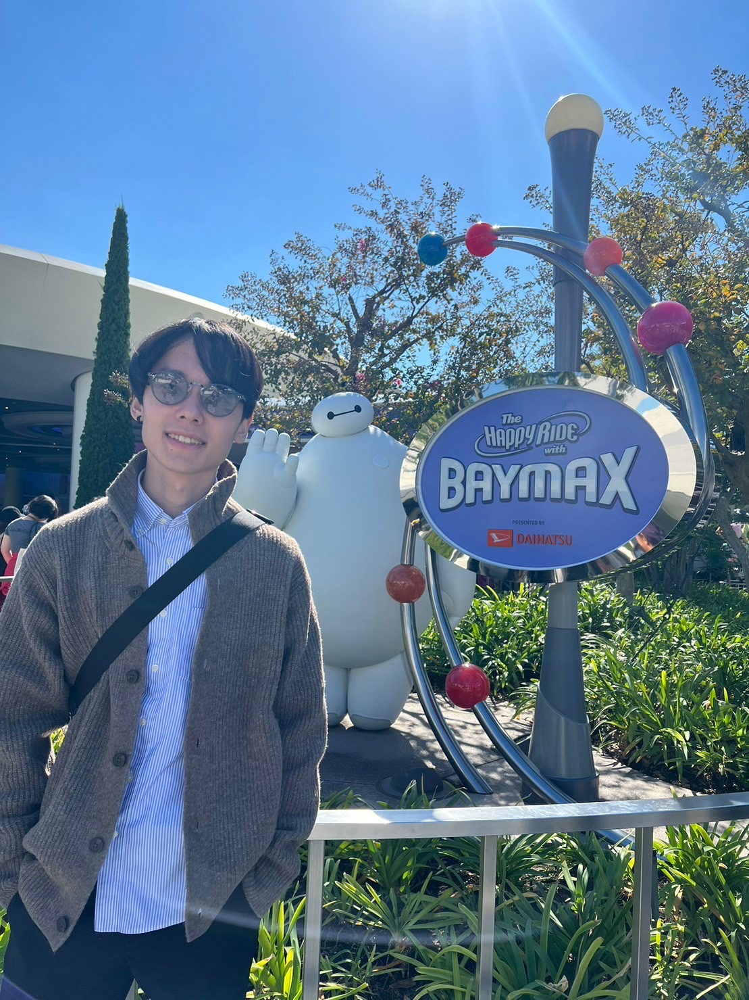

Rei Sato
I am a Machine Learning Engineer based in Tokyo, Japan, specializing in ETL pipelines for feature engineering, user profile estimation, and related tasks. My academic interests include large language models (LLMs) and reinforcement learning (RL). I am open to international job opportunities.
QR code for this page: